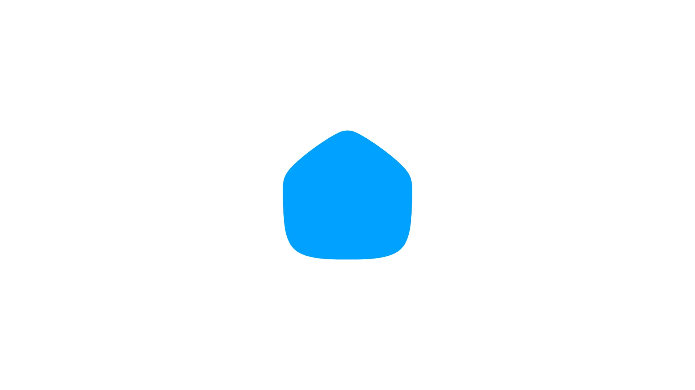

하나의 곡선이 모든 것의 기준
심볼의 외형을 이루는 곡선의 결은 라이브러리 전체의 라운딩·실루엣·머티리얼이 되돌아가는 출처입니다.

오늘의집 브랜드를 가장 압축적으로 표상하는 시각 자산. 로고와 그 변형, 보조 마크처럼 브랜드 정체성을 직접 드러내는 모든 요소가 이 단계에 자리합니다.
심볼은 라이브러리의 모든 자산이 결국 돌아가서 마주하는 기준점입니다. 한 곡선의 결, 한 비율의 정렬이 심볼에서 정해진 다음, 아이콘·2D·3D·사진 모두가 그 기준에서 갈래를 펼쳐 갑니다. 그래서 심볼을 다듬는 일은 다른 모든 자산을 한 번에 다듬는 일이기도 합니다.
이 페이지는 로고 사용 가이드가 아닙니다. 심볼이 어떤 시선과 결정 위에 만들어졌는지를 보여주기 위한 진술입니다 — 실 사용 사양은 사내 브랜드 매뉴얼에 별도로 정리되어 있습니다.
오늘의집의 심볼이 단순한 로고가 아닌 시각 시스템의 출발점이 되도록 만든 네 가지 결정.
심볼의 외형을 이루는 곡선의 결은 라이브러리 전체의 라운딩·실루엣·머티리얼이 되돌아가는 출처입니다.
요소의 수는 의도적으로 적게. 한 번에 읽히는 단순함이 오랜 시간 누적된 인식을 만든다는 믿음에서 출발합니다.
다양한 변형으로 풍성함을 만드는 대신, 일관된 형태가 다양한 맥락에서 같은 인상을 주는 쪽을 택합니다.
심볼의 색은 단순한 톤이 아닌 브랜드 정체성의 직접적 일부입니다. 색의 변형 역시 그 정체성의 위계 안에서 결정됩니다.
심볼이 담아야 할 시선과 약속을 먼저 언어로 정리합니다. 형태는 그 다음 단계의 결과물입니다.
곡선의 결, 비율, 시선의 흐름을 단순한 매스 위에서 반복적으로 다듬어 정렬합니다.
벡터 마스터를 정합한 후, 사용 매체와 크기에 맞는 변형을 같은 형태 시스템 위에서 파생합니다.
심볼에서 결정된 곡선·비율·색을 다른 자산 타입의 마스터에도 정렬해, 라이브러리 전체가 같은 결을 따라 흐르도록 만듭니다.